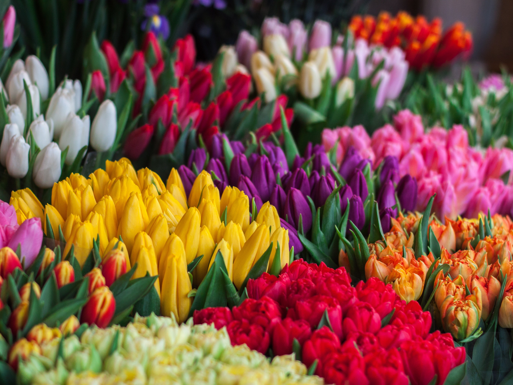

Lalə ildə bir dəfə, mart və ya apreldə çiçək açar. Soğanlı bitkilərdən olub zanbaqgillər ailəsindəndir. Çoxaldılması toxum ilə deyil bala soğanları ilə olur. Toxum ilə çıxarmaq son dərəcə çətindir, bu üsula yalnız yeni növlər əldə etmək üçün müraciət edilir. Əksəriyyətlə bir soğan bir çiçək açır, amma bir soğanda iki və ya üç çiçək çıxaran xaşxaşlar da vardır. Bir və ya birdən çox olsa belə ildə bir dəfə çiçək açarlar. Çoxlu çiçək açan xaşxaşları çiçəkləri birdən birə ardınca ıçarlar. Əgər yalnız bir çiçək varsa bu il bir daha çıxarmayacaq deməkdir. Yay istilərinin başlaması ilə yarpaqları da quruyub gedir. Buna görə evlərdə, bağlarda hobbi olaraq xaşxaş yetişdirilməsi çox uyğun deyil. Çünki yarpaqları belə yalnız yazda vardır; bütün il soğanını qorumaq məcburiyyətindəsiniz. Lalə yetişdirilməsi kəsmə çiçək ticarəti üçün daha uyğundur. Daima açıq havada çöldə tutulması qətiliklə şərtdir. Qışda -40 C dərəcə kimi ağır don hadisələrinə davamlılığı tamdır. Ev içində yetişdirməyə çalışmayın. Balkonlarda qalın kənarlı torpaq saxsılarda yetişdirilə bilinər.
